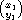
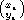
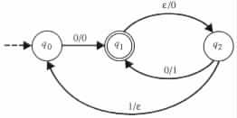
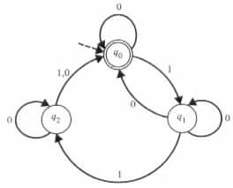
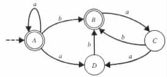
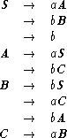
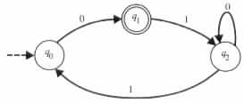
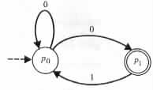

|
 x
do
y := y + x
write y
or
if eof then accept
reject
until false
x
do
y := y + x
write y
or
if eof then accept
reject
until false Assume that the domain of the variables is {0, 1}, and that 0 is the initial value in the domain. Denote each node in the transition diagram with the corresponding state of the program.
- { (x#y, aibj) | x and y are in {a, b}*, i = (number of a's in x), and j = (number of b's in y) }
- { (x, ci) | x is in {a, b}*, and i = (number of appearances of the substring abb's in x) }
- { (x, ci) | x is in {a, b}*, and i = (number of appearances of the substring aba's in x) }
- { (1i, 1j) | i and j are natural numbers and i ³ j }
- { (x, a) | x is in {0, 1}*, a is in {0, 1}, and a appears at least twice in the string x }
- { (xy, aibj) | x and y are in {a, b}*, i = (the number of a's in x), and j = (the number of b's in y) }
- { (x, y) | x and y are in {a, b}*, and either x is a substring of y or y is a substring of x }
- { (x, y) | x is in {a, b}*, y is a substring of x, and the first and last symbols in y are of distinct values }
- { (x, y) | x and y are in {a, b}*, and the substring ab has the same number of appearances in x and y }
- { (1i, 1j) | i = 2j or i = 3j }
- { (1i, 1j) | i
 2j }
2j }
- { (x, y) | x and y are in {a, b}*, and the number of a's in x differs from the number of b's in y }
- { (x, y) | x and y are in {0, 1}*, and (the natural number represented by y) = 3(the natural number represented by x) }
- { ( · · ·  , z1 · · · zn) | x1, ¼ , xn, y1, ¼ , yn, z1, ¼ , zn are in {0, 1}, and (the natural number represented by x1 · · · xn) - (the natural number represented by y1 · · · yn) = (the natural number represented by z1 · · · zn) }
|
 |
For each of the following relations find a finite-state transducer that computes the relation.
- { x | x is in {0, 1}*, and no two 0's are adjacent in x }
- { x | x is in {a, b, c}*, and none of the adjacent symbols in x are equal }
- { x | x is in {0, 1}*, and each substring of length 3 in x contains at least two 1's }
- { 1z | z = 3x + 5y for some natural numbers x and y }
- { x | x is in {a, b}*, and x contains an even number of a's and an even number of b's }
- { x | x is in {0, 1}*, and the number of 1's between every two 0's in x is even }
- { x | x is in {0, 1}*, and the number of 1's between every two substrings of the form 00 in x is even }
- { x | x is in {0, 1}*, but not in {10, 01}* }
- { x | x is in {a, b, c}*, and a substring of x is accepted by the finite-state automaton of Figure 2.4.1 }
|
 |
|
 |

|
 |
Using the notation of the proof of the pumping lemma for regular languages (Theorem 2.4.1), what are the possible values of m, x, and y for each w in L(M)?
- { anbt | n > t }
- { v | v is in {a, b}*, and v has fewer a's than b's }
- { x | x is in {a, b}*, and x = xrev }
- { vvrev | v is accepted by the finite-state automaton of Figure 2.E.6 }
Figure 2.E.6
- { an2 | n ³ 1 }
- { anbt | n
 t }
t }
- { x | x is in {a, b}*, and x
 xrev }
xrev }
- Inverse, that is, Y(R) = R-1 = { (y, x) | (x, y) is in R }.
- Closure, that is, Y(R) = Èi³0Ri.
- Composition , that is, Y(R1, R2) = { (x, y) | x = x1x2 and y = y1y2 for some (x1, y1) in R1, and some (x2, y2) in R2 }.
- Cascade composition, that is, Y(R1, R2) = { (x, z) | (x, y) is in R1 and (y, z) is in R2 for some y }.
- Domain:
- { M | M is a finite-state automaton }
- Question:
- Is L(M) a set of infinite cardinality for the given instance M?